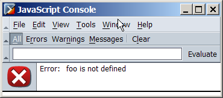

<!DOCTYPE html PUBLIC "-//W3C//DTD HTML 4.01//EN"
"http://www.w3.org/TR/html4/strict.dtd">
<html lang="en">
<head>
<meta http-equiv="Content-Type" content="text/html; charset=ISO-8859-1">
<title>IE id </title>
</head>
<body onload="foo.style.width='200px'">
<div id="foo" style= "border:solid 5px green">div content</div>
</body>
</html>

The Javascript console is a very valuable tool when invalidating bugs where IE and moz differ. (See Hendrik Gemal's page for ref.)